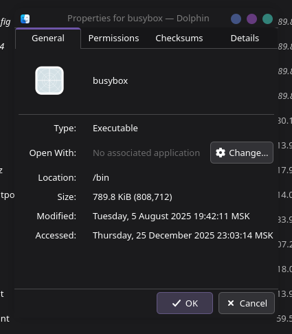
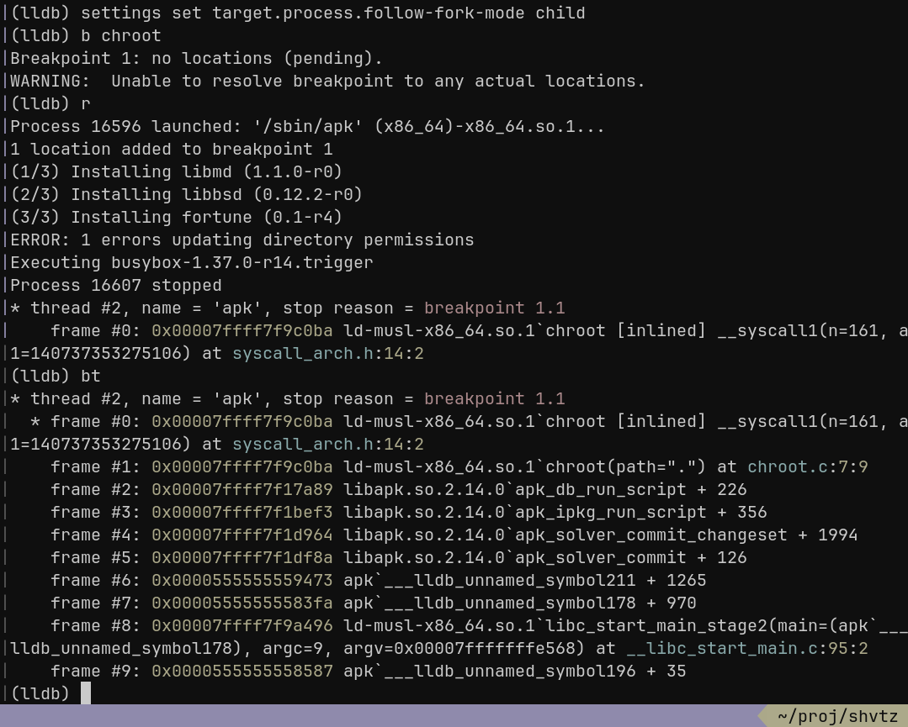
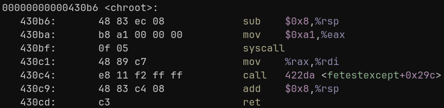
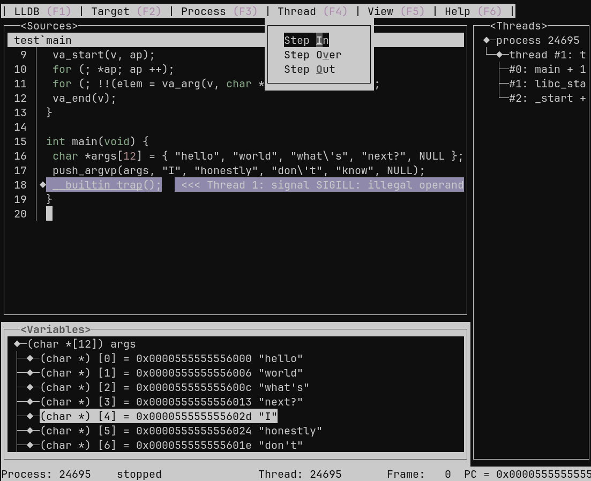
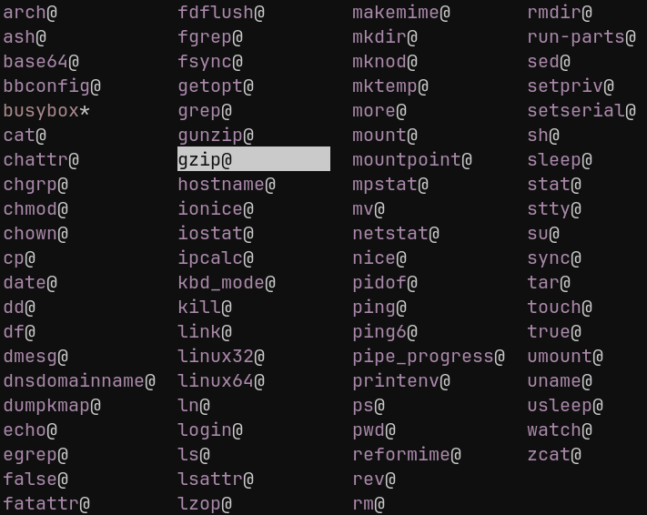
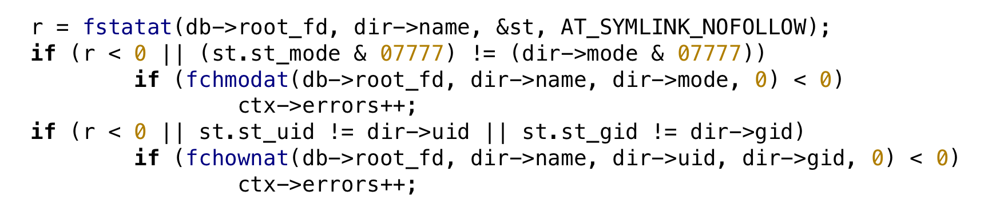

28/12/25
Nikita Donskov
I generally like winter, but now I can barely leave home because of the cold now. It means it's time to hack around with apk(8), Alpine's Package Keeper!
I am a huge fan of Alpine Linux project. I use it
chroot(2) jailsThe thing I like most about Alpine is it's package management system. Alpine's apk-tools is different than other package managers in unique way
Package installation or removal is done as a side effect of modifying this system state. It is also possible to edit /etc/apk/world with the text editor of your choice and then use apk fix to synchronize the installed packages with the desired system state.
— Ariadne's Space, writeup
I am currently working on a project which fits into Alpine's infrastructure and uses apk-tools. apk(8) has an option -p, --root ROOT:
Manage file system at ROOT.
— man 8 apk
This basically allows to add/delete packages inside chroot, without invoking chroot(1). One of the project's ideas is to avoid using root at all. Unfortunately, even inside chroot environment, apk-tools requires root priveges in order to change root-level directories permissions (GID & UID) to 0, e.g. /etc, /usr, /bin. If one runs apk(8) as an unprivileged user, this kind of output is produced in attempt to install new package:
# apk --root /mnt/alpine-chroot add fortune ERROR: Unable to lock database: Permission denied ERROR: Failed to open apk database: Permission denied
Most of apk-tools files reside in /etc/apk, /lib/apk and similar directories. In typicall install they are owned by root and is not writable by an ordinary user. That's exactly what's going on here — apk(8) tries to gain write access to database lock at /etc/apk/db/lock and eventually fails:
# strace apk --root /mnt/alpine-chroot add fortune 2>&1 | grep EACCES openat(3, "lib/apk/db/lock", O_RDWR|O_CREAT|O_LARGEFILE|O_CLOEXEC, 0600) = -EACCES (Permission denied)
One thing we can try here is to change owner of all files inside chroot to current user. Obviously that's unacceptable for real system, but goal here is to install package at any cost
$ doas chown -vR $UID:$UID /mnt/alpine-chroot $ apk --root /mnt/alpine-chroot add fortunte (1/3) Installing libmd (1.1.0-r0) (2/3) Installing libbsd (0.12.2-r0) (3/3) Installing fortune (0.1-r4) ERROR: 1 errors updating directory permissions Executing busybox-1.37.0-r14.trigger ERROR: busybox-1.37.0-r14.trigger: chroot: Operation not permitted ERROR: busybox-1.37.0-r14.trigger: script exited with error 127 OK: 12 MiB in 27 packages
Despite a couple of errors, package got installed. Let's look closer at what apk-tools complains about:
Besides other files .apk can contain one or more install scripts. They are shell scripts, which apk-tools execute during package installation. Alpine's wiki describes 6 different kinds of install scripts. Because we are looking exclusively at package installation, we are only interested in two kinds of them:
| Kind | File name | Description |
|---|---|---|
| Pre-install | $pkgname.pre-install | Executed before package contents are unpacked |
| Post-install | $pkgname.post-install | Executed after package contents are packed |
Apk-tools option --no-scripts can be used to ignore all install scripts found in package, which I initially used. Traditional UNIX/Linux programs consist of a one or two ELFs. Simple unpacking to rootfs can do the work. But it's not the case with more complex projects, such as Busybox 
Busybox is used in Alpine instead of GNU coreutils by design. Binary at /bin/busybox is only around ~800K in my system! The idea is simple — instead of having unique binary for each UNIX command, busybox(1) combines all of them in one executable. It is also designed to be very small in order to perfectly fit into embedded devices, initramfs and other bizarre environments, where GNU coreutils might be an overhead. When called with no arguments, busybox prints a bit of metainfo, including available applets (UNIX utilities) it supports and exits. For example readlink(2) utility can be run by passing it's name as second argument:
$ busybox readlink /sbin/init /bin/busybox
Typing "busybox" every time is not necessary through. Program determines what applet to run by looking at the very first argument, argv[0]. Busybox is usually called through a symlink like that:
$ ls -lh1 $(command -v readlink) lrwxrwxrwx 1 root root 12 Jan 8 2025 /usr/bin/readlink -> /bin/busybox $ readlink /proc/self/exe /bin/busybox
Without set of symbolic links, system doesn't meet POSIX requirements because of lack of standard UNIX utilities. In Alpine's system, busybox(2) symlinks are created during corresponding package installation, in post-install script busybox.post-install. If --no-scripts is passed system basically becomes incomplete
Even though this is one of the best examples where install scripts have critical role, there are many, many more. Look at abuild(1). It creates abuild group, so you can add desired user to that
By looking at above errors we understand that problem is with permissions. But what exactly causes the issue? Apk-tools is written in C, meaning it makes common UNIX syscalls either by using libc or libc syscall stubs. One of the errors mentions chroot:
ERROR: busybox-1.37.0-r14.trigger: chroot: Operation not permitted
I'd looked into chroot-based application from Australian Down-Underground CTF (2025) not long ago, you can read about it in my previous writeup. From chroot(2):
Only a privileged process (Linux: one with the CAP_SYS_CHROOT capability in its user namespace) may call chroot().
Ordinary user doesn't have CAP_SYS_CHROOT, that's why Linux returns EACCESS here
Let's find out why and where exactly does apk-tools call chroot(2). I launched LLDB to set a breakpoint on desired routine and check backtrace on hit. Apk-tools is probably forking before chrooting, so setting follow-fork mode to "child" is necessary. settings set is lldb's way of doing it. It's kind of similar to what gdb has

Lucky me, at least top-level symbol names are there. Execution reaches libapk.so.2.14.0's apk_db_run_script(). Apk-tools call chroot(2) with "." argument shortly after changing directory via fchdir(2). If that fails, script doesn't get executed through execve(2) later on
My idea is simple — override both fchdir(2) and chroot(2) behaviour. Hook has to return 0, indicating operation's success, which will eventually lead to script execution below. The original behaviour must be preserved though, script has to be executed inside chroot. How on Earth can one achieve this without privileged chroot(2) syscall?
Even though making chroot(2) priveleged is a great security mechanism, in lots of cases it's just sad thruth and heartbreaking. Imagine you have an Android-based non-rooted mobile phone and you wish to install Alpine Linux in a chroot, but you are unable to do so. In fact root priveleges aren't needed as long as you don't touch system files. If only there was some way to fool processes, so that they think they are actually executed as root... well, that's exactly what PRoot project is aims to do!
In short, proot(1) is chroot(1) implementation in userspace and can be called as an ordinary user. It does it's magic by hooking lots of system calls, e.g. open("/bin", O_READ+O_DIRECTORY) called by underlying program becomes open("/home/user/chroots/chroot/bin", O_READ+O_DIRECTORY). It can emulate root permissions as well, in order to make root-only programs (like apk(8)) work. PRoot implements not only chroot(1)'s functionality. It's capable of doing mount --bind, execute binaries compiled for other architectures through QEMU userspace emulator and has lots of other cool features
Despite all this amazing stuff, it's not ideal. By using lots of hooks it creates time overhead. You don't really feel it while doing ordinary operations, but it becomes quite noticeable when compiling or doing other expensive calculations
Hooks have to do the following:
execve(2) — the most complex one. It needs to:
proot(1) (if needed)proot(1) with the requested pathnamechroot(2) — fake chroot operation. Remember path argument to check it later if needed & return 0, indicating successLinux is keeping an eye on system call numbers to achieve backwards compatibility, so they aren't changed between versions. This way older software can run on modern systems without much trouble. That's not the case with other kernels though, even UNIX or UNIX-like. That's exactly the reason why dynamic programs usually don't perform system calls directly, but rather using syscall stubs. Syscall stubs are often found in libc implementations. Here's stub for chroot(2) from MUSL libc on my system:

If for whatever reason chroot(2) system call number changes from 0xa1 to something else during system update, libc stub will be updated too, so upper-level programs won't break
Hooking system call stubs isn't any harder than hooking any other functions, because they are basically functions too (as most of the symbols exported by libc). Simplest way to do that without patching at runtime is to use symbol overriding via LD_PRELOAD dynamic loader's environment variable. Even GNU project suggests this technique to replace Glibc's malloc(3) implementation if needed
Mechanism is quite straightforward: dynamic loader loads any objects listed in LD_PRELOAD variable prior to loading any other object to memory during process startup, including libc. If you define symbol which has the same name as symbol in libc, dynamic linker will use that instead of original one
$ cat <<EOF >test.c
> #include <stdio.h>
> int main(){ printf("Please, write that text!\n"); return 0; }
EOF
$ cat <<EOF >preload.c
> #include <unistd.h>
> int printf(const char *, ...){ return write(1, "no.\n", 4); }
EOF
$ CFLAGS='-fno-builtin -O0' make test
$ cc -shared -fPIC -o libpreload.so.1 preload.c
$ ./test
Please, write that text!
$ LD_PRELOAD=libpreload.so.1 ./test
no.
printf(3) is using write(2) system call internally. Hooking write(2) leads to full control over data actually printed to TTY
I am using -fno-builtin -O0 in this example because some compilers might replace printf(3) call with puts(3), which is absolutely legal optimization in real world
Keep in mind that even though there is combination of fchdir(2) and chroot(2) in one place of apk-tools source, it may not be the the case for the whole codebase. Nothing stops it from calling chroot(2) with argument other, than ".". This case should not be forgotten
#define _GNU_SOURCE
#define _POSIX_C_SOURCE
#include <limits.h>
#include <unistd.h>
#include <string.h>
static char chroot_path[PATH_MAX];
int chroot(const char *path)
{
strcpy(chroot_path, !strcmp(path, ".")
? get_current_dir_name()
: path);
return 0;
}
Instead of actually changing root, hook saves new root path into chroot_path. Absolute path is needed from now on, so it checks whether it's ".", and if it really is so, then it gets current directory path from get_current_dir_name(3)
I also quickly designed simple helper function, void push_argvp(char **, ...). It appends any strings passed to ... to the end of provided string array
char *args[12] = { "hello", "world", "what\'s", "next?", NULL };
push_argvp(args, "I", "honestly", "don\'t", "know", NULL);
__builtin_trap();
After execution the args contents are:

It is necessary to provide a bit more arguments to PRoot than just new root and executable's pathname with parameters. Options I use:
Resulting command line becomes:
proot -0 -w / -b /dev -b /proc -b /sys -r <new root> <program> <parameters>
This is how it looks in the hook:
int execve(const char *path, char *const argv[],
char *const envp[])
{
char *argvp[32];
/* ... */
memset(argvp, 0, sizeof argvp);
push_argvp(argvp,
"proot", "-0",
"-w", "/",
"-b", "/dev",
"-b", "/proc",
"-b", "/sys",
"-r", chroot_path, path, NULL);
argv ++; /* Skip program's name argument; we have our own */
while (*argv) {
push_argvp(argvp, *argv++, NULL);
}
file-hierarchy(7) describes POSIX-compatible system rootfs layout. /tmp directory by convention is used by programs to store temporary files
The place for small temporary files. This directory is usually mounted as a "tmpfs" instance, and should hence not be used for larger files. (Use /var/tmp/ for larger files.) This directory is usually flushed at boot-up. Also, files that are not accessed within a certain time may be automatically deleted.
In most cases the data in /tmp isn't executable. That's why some system administrators (including myself) decide to create it on a separate partition, mounted with noexec flag (mount(8)) to disallow executing any files there on the kernel level
$ mount | grep '/tmp[[:space:]]' /dev/nvme0n1p3 on /tmp type btrfs (rw,nosuid,noexec,...
However, any attempt to run proot(1) with read-only /tmp leads to an error
proot error: it seems the current temporary directory (/tmp) is mounted with no execution permission.
proot info: Please set PROOT_TMP_DIR env. variable to an alternate location '/XXX/XXX/tmp' for example).
proot error: execve("/bin/sh"): No such file or directory
proot info: possible causes:
* the program is a script but its interpreter (eg. /bin/sh) was not found;
* the program is an ELF but its interpreter (eg. ld-linux.so) was not found;
* the program is a foreign binary but qemu was not specified;
* the loader was not found or doesn't work.
fatal error: see `proot --help`.
Even if most programs do not execute their files in /tmp, it doesn't necessarily mean all of them behave like that. Message above suggests pointing PROOT_TMP_DIR to some other place, which has executable permission. After doing so, everything is running normally
One can't simply modify data envp points to. There is an option to duplicate it to some local array and append PROOT_TMP_DIR to the end, but is it really needed? What if apk-tools call execve(2) with zeroed-out envp? database.c creates environment with only one variable in it — PATH. Nothing stops us from ignoring this environment and constructing our own, with both PATH and PROOT_TMP_DIR
int execve(const char *path, char *const argv[],
char *const envp[])
{
char *tmpdir, *argvp[32];
/* ... */
asprintf(&tmpdir, "PROOT_TMP_DIR=%s/tmp", chroot_path);
char * const env[] = {
"PATH=/usr/sbin:/usr/bin:/sbin:/bin",
tmpdir,
NULL
};
execve_p("/usr/bin/proot", argvp, env);
return -1;
}
Now let's compile hooks and see whether everything works:
$ chroot .
chroot: can't change root directory to '.': Operation not permitted
$ cc -fPIC -shared -o libchroot2proot.so.1 chroot2proot.c
$ mkdir test-root
$ LD_PRELOAD=./libchroot2proot.so.1 apk \
--allow-untrusted \
--initdb \
--root test-root \
--repository https://dl-cdn.alpinelinux.org/alpine/latest-stable/main/ \
add busybox
(1/2) Installing musl (1.2.5-r21)
(2/2) Installing busybox (1.37.0-r30)
Executing busybox-1.37.0-r30.post-install
ERROR: 16 errors updating directory permissions
Executing busybox-1.37.0-r30.trigger
OK: 1 MiB in 2 packages

As you can see, symlinks are in fact there after processing busybox-1.37.0-r30.post-install in new root!
Apk-tools is trying to update permissions of installed objects and seemingly fails. This is not critical, but I felt like fixing this one too. Message itself comes from apk_db_update_directory_permissions() if ctx.errors is not zero. This field is edited before by update_permissions() callback

Notice how both fchmodat(2) and fchownat(2) are executed only if fstatat(2) doesn't fail. My first though was to return error from that, but it would possibly break other stuff, e.g. libc in the worst case. More harmless solution is to override fchownat(2)
int fchownat(int dirfd, const char *pathname, uid_t owner, gid_t group, int flags)
{
__typeof__(fchownat) *fchownat_p = dlsym(RTLD_NEXT, "fchownat");
return (owner != geteuid()) || (group != getegid())
? 0
: fchownat_p(dirfd, pathname, owner, group, flags);
}
RTLD_NEXT is pseudo-handle, which is used to search for next symbol with the same name. If application is trying to change owner to UID, which is not EUID, hook pretends everything is okay by doing nothing and returning 0
Let's try once again:
$ LD_PRELOAD=./libchroot2proot.so.1 apk \
--allow-untrusted \
--initdb \
--root test-root \
--repository https://dl-cdn.alpinelinux.org/alpine/latest-stable/main/ \
add busybox
(1/2) Installing musl (1.2.5-r21)
(2/2) Installing busybox (1.37.0-r30)
Executing busybox-1.37.0-r30.post-install
Executing busybox-1.37.0-r30.trigger
OK: 1 MiB in 2 packages
The error message is gone, everything works like a charm
Using SUID bit on apk-tools. This is used internally by Alpine's build system. Package abuild-sudo provides abuild-sudo binary, which has SUID set. abuild-apk, abuild-adduser & abuild-addgroup are all symlinks pointing to it. abuild-sudo determines which program to run by looking at part after '-' in argv[0]
$ apk info --quiet --contents abuild-sudo | > sed -e '/^$/d' -e 's|^|/|' | > xargs ls -l1h lrwxrwxrwx 1 root root 11 Aug 12 10:48 /usr/bin/abuild-addgroup -> abuild-sudo lrwxrwxrwx 1 root root 11 Aug 12 10:48 /usr/bin/abuild-adduser -> abuild-sudo lrwxrwxrwx 1 root root 11 Aug 12 10:48 /usr/bin/abuild-apk -> abuild-sudo -r-sr-xr-x 1 root root 13.9K Jan 3 2025 /usr/bin/abuild-sudo
Using Bubblewrap's bwrap(1) to create unprivileged sandbox and use apk(8) in it. That method is implemented in abuild(1) (see rootbld command) and documented on wiki
You may now build your packages from source in an unprivileged sandbox based on bubblewrap with the command:
abuild rootbld
Additional package abuild-rootbld is needed
Using User namespaces, as described in user_namespaces(7). This kernel feature allows running commands with UID 0 (from the inside). Check out this awesome writeup by Martin Braam
This does have a lot of limitations though which I somehow all manage to hit with this.
— Martin Braam
| Method | Author(s) | Pitfalls |
|---|---|---|
| SUID | Alpine's team | Having another rarely used SUID binary on system might be considered as security risk |
| Bubblewrap | Alpine's team | Needs additional setup when running inside container |
| User namespaces | Martin Braam | Needs manual setup. More experimental than end-user ready |
Of course this solution is not bulletproof by any means and has it's own pitfalls. Anyway, it was truly interesting journey investigating apk-tools internals and revisiting chroot mechanism once again
I am also surprised how basically any topic can be turned into research with a bit of an effort. Also I really enjoy how changing things on the lowest level possible influences upper levels a lot. That's absolutely beautiful
chroot(2), mount --bind implementation and many more